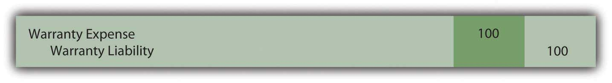
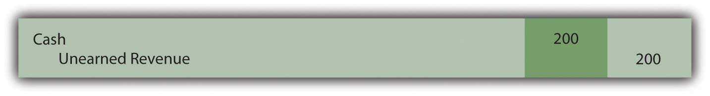
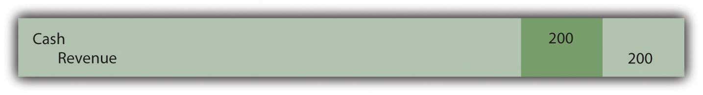
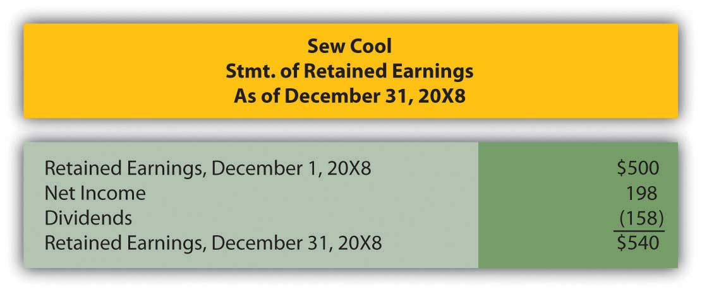
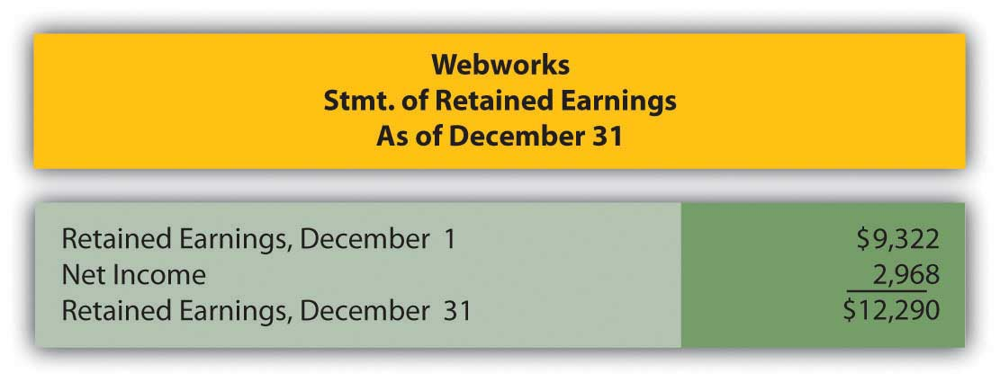
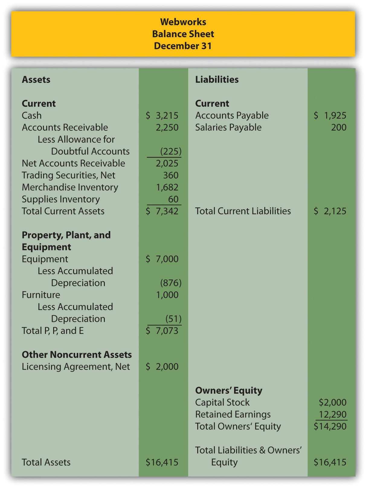

Which of the following is not normally a current liability?
Sierra Inc. manufacturers environmentally friendly appliances. It offers a two-year warranty standard. In Year 1, Sierra sold 450,000 toasters. Past experience has told Sierra that approximately 4 percent of the toasters require repair at an average cost of $10 each. During Year 1, Sierra actually spends $38,000 and during Year 2, Sierra actually spends $105,000. What is the balance in the warranty liability account at the end of year 2?
Reporting contingent losses but not contingent gains is an example of which accounting principle?
Watkins Inc. has the following assets:
| Cash | $400 |
| Inventory | $730 |
| Prepaid Rent | $460 |
| Equipment | $4,000 |
It has the following liabilities
| Accounts Payable | $560 |
| Unearned revenue | $200 |
| Long-term Note Payable | $3,500 |
What is Watkins’ current ratio?
The following figures appeared on Whazzit’s financial statements for the year:
| Cost of goods sold | $1,968,000 |
| Beginning inventory | 238,000 |
| Ending inventory | 249,000 |
| Accounts payable | 167,000 |
What was Whazzit’s age of accounts payable?
Maxout Company sells computers. The computers have an embedded one-year warranty, but customers may choose to buy an extended warranty that covers the computer for two years beyond that. The cost of the extended warranty is $200. What journal entry would Maxout make at the end of the second year after the computer is purchased, assuming the customer also purchases the extended warranty?
Figure 13.19
Figure 13.20
Figure 13.21

Figure 13.22
Which of the following is not a criterion that must be met for an item to be classified as a liability?
Knockoff Corporation makes a videogame unit known as the Gii. During the month of June, the following transactions occurred. Record any necessary journal entries for a–e.
OK Buy sells gift cards in various denominations. The company likes to sell these because it receives the cash immediately, but knows that a certain percentage will never be redeemed for merchandise. On December 1, OK Buy had a balance in unearned revenue from sales of gift cards of $728,000.
Ingalls Company is a fine jeweler located in a mall in a midsize city. During December 20X4, an unfortunate accident happens. Mrs. Rita Yeargin trips over a giant, singing Rudolph set up by the mall management company and went sprawling into Ingalls’ store where she cracked her head on a display case. She spent several days in the hospital with a sprained ankle, bruised elbow and a concussion. Prior to the end of the year, Mrs. Yeargin’s lawyer files papers to sue both the mall management company and Ingalls for $1,000,000. Ingalls’ insurance company tells it that its policy does not cover accidents involving giant, singing Rudolphs. Ingalls’s attorney tells it that it is difficult to guess what a jury might do in this case. He estimates that Ingalls will probably be liable for only 20 percent of the $1,000,000 since the Rudolph actually belongs to the mall.
Sadler Corporation produces lawnmowers. The lawnmowers come with a three-year warranty. During 20X6, Sadler sold 20,000 lawnmowers that cost $5,800,000 to manufacture for $10,000,000 cash. Sadler’s accountant estimates that 10 percent will need to be repaired at some point over the next three years at an average cost of $37 per lawnmower.
The Eyes Have It sells custom eyewear with a one-year embedded warranty. Customers may purchase an extended one-year warranty beyond that. During 20X7, the company sold 52,000 pairs of eyeglasses for $1,000,000. Customers who purchased 75 percent of those pairs also purchased the one-year extended warranty. This brought in $200,000 cash.
In several past chapters, we have met Heather Miller, who started her own business, Sew Cool. The financial statements for December are shown below. To calculate age of accounts payable, assume that beginning inventory on 6/1/20X8, when Sew Cool started business, was zero. Also, assume that Sew Cool was only in business for 210 days.
Figure 13.23 Sew Cool Financial Statements

Figure 13.24
Figure 13.25

Based on the financial statements determine the following:
This problem will carry through several chapters, building in difficulty. It allows students to continuously practice skills and knowledge learned in previous chapters.
In Chapter 12 "In a Set of Financial Statements, What Information Is Conveyed about Equity Investments?", you prepared Webworks statements for December. They are included here as a starting point for January.
Figure 13.26 Webworks Financial Statements

Figure 13.27
Figure 13.28
The following events occur during January:
a. Webworks starts and completes seven more Web sites and bills clients for $4,500.
b. Webworks purchases supplies worth $100 on account.
c. At the beginning of January, Webworks had fourteen keyboards costing $113 each and twenty flash drives which had been written down to $5 each in December due to obsolescence. Webworks uses periodic FIFO to cost its inventory.
d. On account, Webworks purchases sixty-five keyboards for $117 each and ninety of the new flash drives for $20 each.
e. Webworks pays Nancy $775 for her work during the first three weeks of January.
f. Webworks writes off an account receivable from October in the amount of $150 because collection appears unlikely.
g. Webworks receives $450 in advance to design a Web site for a local salon. Work won’t begin on the Web site until February.
h. Webworks sells sixty keyboards for $9,000, all twenty of the old flash drives for $100 and eighty of the new flash drives for $2,400 cash.
i. During January, Webworks receives notice that one of its former clients is not happy with the work performed. When Webworks refuses to refund the client’s money, the client decides to sue for what he paid plus damages for his “pain and suffering,” which comes to $5,000. An attorney friend of Leon’s mom believes that the suit is without merit and that Webworks probably will not have to pay anything.
j. Webworks collects $5,000 in accounts receivable.
k. During January, Webworks sells all of its stock in XYZ Company for $8 per share. Webworks had originally purchased sixty shares for $5 and they were selling for $6 per share on the last balance sheet date.
l. Webworks pays $200 for advertising that will run over the next two months.
m. Webworks pays off its salaries payable from December.
n. Webworks purchased 175 shares of QRS Company for $10 per share. Webworks considers this an available for sale security.
o. Webworks pays off $9,000 of its accounts payable.
p. Webworks pays Leon a salary of $2,000.
q. Webworks prepays $600 for rent for the months of January, February, and March.
r. QRS Company pays Webworks a dividend of $30.
s. Webworks pays taxes of $1,000 in cash.
Required:
A. Prepare journal entries for the above events.
B. Post the journal entries to T-accounts.
C. Prepare an unadjusted trial balance for Webworks for January.
D. Prepare adjusting entries for the following and post them to your T-accounts.
t. Webworks owes Nancy $200 for her work during the last week of January.
u. Leon’s parents let him know that Webworks owes $320 toward the electricity bill. Webworks will pay them in February.
v. Webworks determines that it has $40 worth of supplies remaining at the end of January.
w. Prepaid rent should be adjusted for January’s portion.
x. Prepaid advertising should be adjusted for January’s portion.
y. Webworks is continuing to accrue bad debts at 10 percent of accounts receivable.
z. Webworks continues to depreciate its equipment over four years and its furniture over five years, using the straight-line method.
i. The license agreement should be amortized over its one-year life.
ii. QRS Company is selling for $9 per share on January 31.
iii. Record cost of goods sold.
E. Prepare an adjusted trial balance.
F. Prepare financial statements for January.